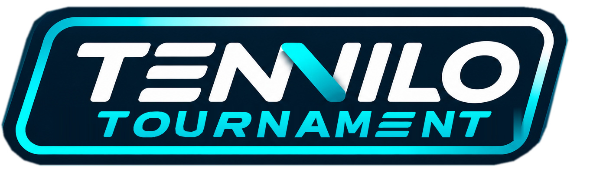
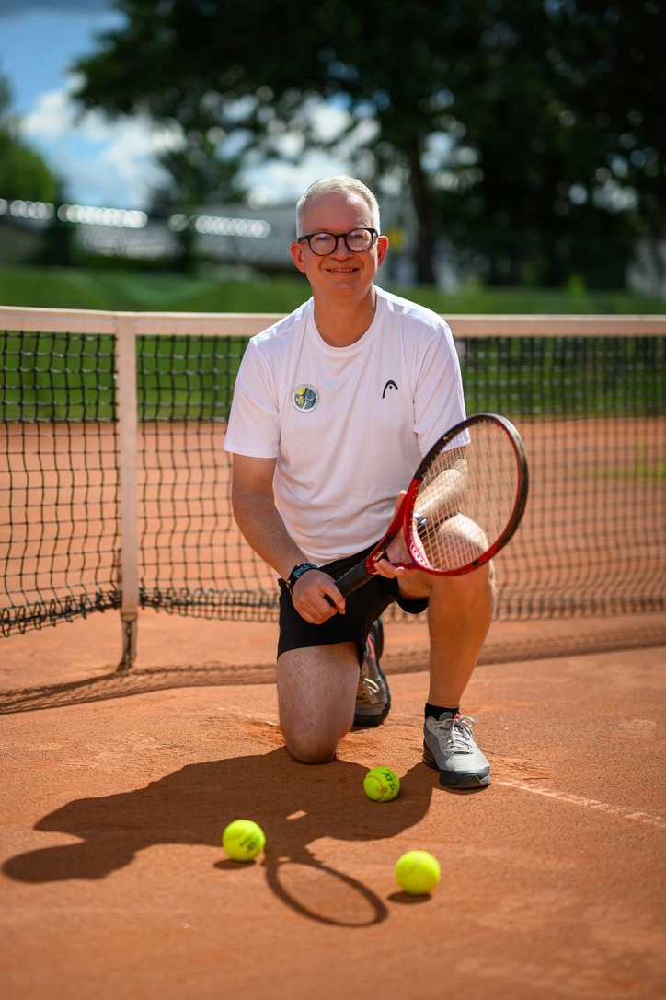
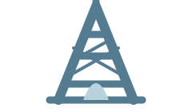
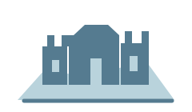

RANDOM CHOICE
Wer muss?!
Everyone places a finger on the screen. The countdown decides who's up.
WHERE IT ALL STARTED


Not a big portfolio. Just a quick guide to the things I'm working on – and the places you can find me online.
SEE WHAT’S TAKING SHAPESome projects start with a question. Others on the tennis court. Here's what I'm working on right now.
TENNILO Score is taking shape for Apple Watch and iPhone. Keep score, follow the match and focus on the court.


TOURNAMENT UMPIRE
UMPIRE WER MUSS?!
WER MUSS?!Five projects – including TENNILO Score as my current focus, with Tournament and Umpire under the same brand.

 Tournaments & rules
Organising and running tennis tournaments with confidence. Tennis-Schiri brings together tournament management, referee assignments and services for tennis clubs – including rules advice, workshops and upcoming events.
02
Tournaments & rules
Organising and running tennis tournaments with confidence. Tennis-Schiri brings together tournament management, referee assignments and services for tennis clubs – including rules advice, workshops and upcoming events.
02

 Scorekeeping app · Apple Watch · In development
TENNILO Score – keep score right from your wrist. A tennis scorekeeping app for Apple Watch, with an accompanying iPhone app. Planned beta test: 27 December 2026 at a ranking tournament in Bad Saarow; targeted launch in spring 2027.
03
Scorekeeping app · Apple Watch · In development
TENNILO Score – keep score right from your wrist. A tennis scorekeeping app for Apple Watch, with an accompanying iPhone app. Planned beta test: 27 December 2026 at a ranking tournament in Bad Saarow; targeted launch in spring 2027.
03
 Tournament management · In development
TENNILO Tournament – organise tournaments digitally. A web app under the TENNILO brand for club and organiser events: formats, draws, schedules, results and live score displays.
04
Umpire app · In planning
TENNILO Umpire – digital tools for tennis officials. Planned features include a modular interface for officiating matches and sending scores to external scoreboards.
05
Tournament management · In development
TENNILO Tournament – organise tournaments digitally. A web app under the TENNILO brand for club and organiser events: formats, draws, schedules, results and live score displays.
04
Umpire app · In planning
TENNILO Umpire – digital tools for tennis officials. Planned features include a modular interface for officiating matches and sending scores to external scoreboards.
05
Real screenshots from the TENNILO Score demo – from wrist to phone to the live scoreboard.


Away from the tennis court, a small collection of playful apps is taking shape. Short, silly, surprising – and made for those moments in between.
Everyone places a finger on the screen. The countdown decides who's up.
Stop the clock at exactly 5, 10 or 15 seconds. Harder than it sounds.
Tap the green circles, avoid the coral ones. Twenty frantic seconds.
The coffee cup wobbles. Keep it balanced and spill as little as possible.
Keep inflating the balloon or stop now? More risk means more points.
Outrageous guessing questions for two to four players. Who gets closest?
Tennis tournaments, digital tools and little everyday ideas may seem worlds apart. What connects them is the joy of finding a simpler way – and then actually building it.
And far more than tennis and technology.
Some people know me from the tennis court. Others through my apps or websites. But of course, there is more to life than that.
I enjoy travelling, listening to music and good food. Most importantly, friends and family are part of my life – and spending time with them matters more than any project.
Then there are hobbies, new experiences and the simple things that make life interesting. Not everything needs a project plan.

Six parts of my life that didn't really fit on a project-only website before.
Discovering new places, collecting impressions and seeing things from a different angle.
EXPLORE 26 PLACESMusic is part of my day – sometimes in the background, sometimes front and centre.
Restaurants, bistros and snack bars – I love trying new places. Plus my HRC collection.
MY HRC STOPSSitting together, talking, laughing and enjoying time with friends.
Making time for each other. Being personal without putting every detail online.
An Eisbären fan since 1998, and a regular at Berlin comedy clubs – especially smaller, new venues.
MORE ABOUT MY HOBBIESAway from tennis and code, things can get loud. Or just really funny.
I've been an Eisbären fan since 1998. It's a passion that's been with me for quite a while – and certainly not just in passing.
I regularly visit comedy clubs in Berlin and love smaller venues. Mostly German-language shows, but more and more English comedy too. Berlin has excellent comedians, and I enjoy discovering new places.
PLACES I'VE VISITEDSome of the clubs and venues I've discovered over time. No visit counts, no dates – just the names.
Berlin has brilliant comedians. Some venues are tiny, others a little larger. I enjoy trying something new.
Some places once. Others apparently worth returning to.
 Irish Harp
Irish Harp Prague Castle
Prague Castle Cologne Cathedral
Cologne Cathedral Colosseum
Colosseum Manneken Pis
Manneken Pis Warsaw Mermaid
Warsaw Mermaid
Eiffel Tower Milan Cathedral
Milan Cathedral Acropolis
Acropolis Canal Houses
Canal Houses Munich Monk
Munich Monk St. Stephen’s Cathedral
St. Stephen’s Cathedral Hagia Sophia
Hagia Sophia
Edinburgh Castle Royal Palace
Royal Palace Golden Roof
Golden Roof Bolzano Cathedral
Bolzano Cathedral Beach & Black Sea
Beach & Black Sea Riga Old Town
Riga Old Town Porto Historic Centre
Porto Historic Centre Belém Tower
Belém TowerI'm always looking for new places to eat. Whether it's a restaurant, bistro or simple snack bar, they all have their charm. It's not about the size of the venue – it's about enjoying the food.
From legendary first locations to extraordinary facades: my own collection of Hard Rock Cafes I’ve visited. Every record, badge and backstage pass belongs to a real stop.
The facades are simplified architectural illustrations of the specific cafes, not photographs. Unofficial personal collection, not affiliated with Hard Rock. Logo: Wikimedia Commons. London Original and Piccadilly Circus are separate visits.
Not everything belongs online. Some stories are best shared with the people who were there.
Find me
elsewhere.
Quick links, not long introductions. Find my profiles and project channels here.